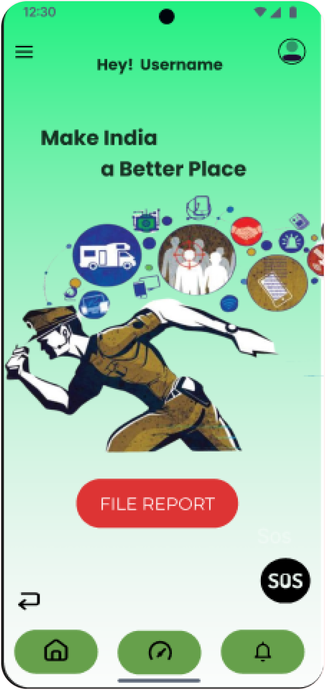
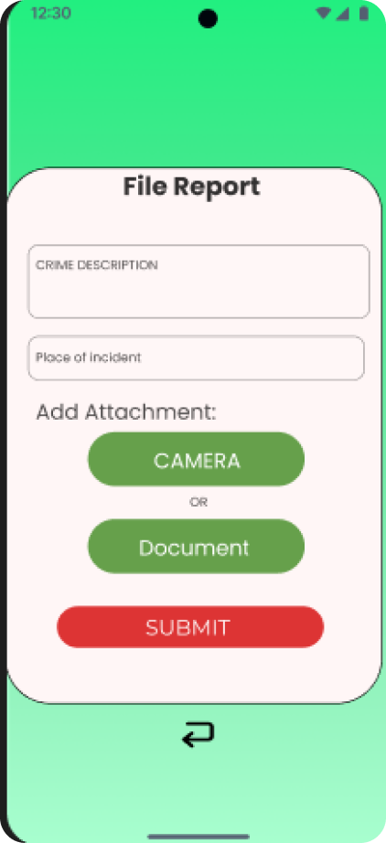
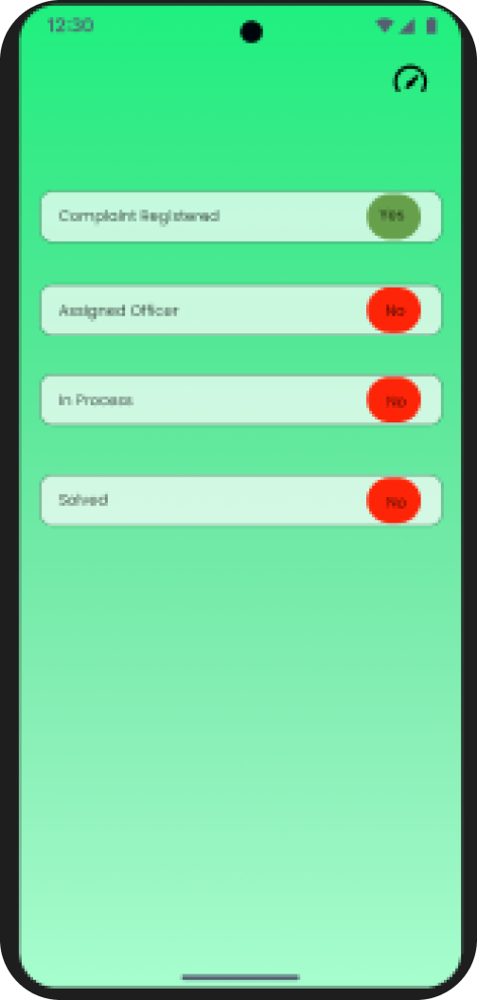
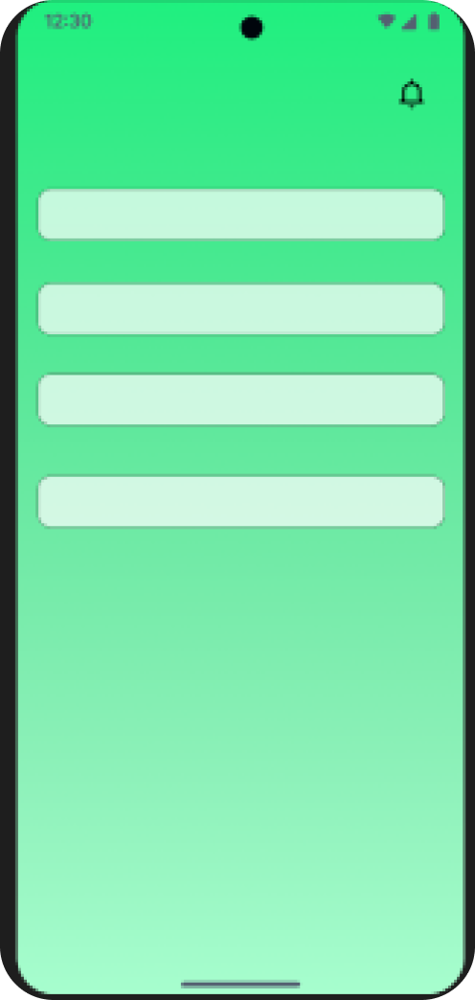
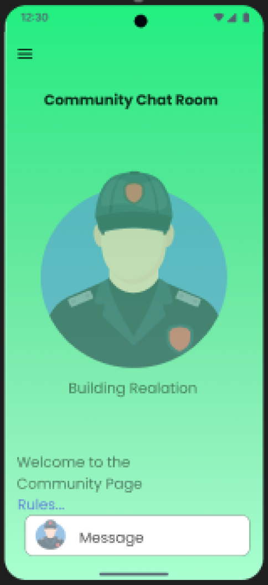

Sentinex, a trusted companion for community safety, that transforms
neighborhoods by fostering collaboration among residents, leaders, and
law enforcement.
Access authorization for Sentinex platform.
Review and verify reported cases.
Coordinate with users, police stations, and legal authorities.
Provide guidance and support to users.
Collaborate with law enforcement for community safety.
for user,
Ability to sign up and create a user account.
Access to features such as filing cases, accessing community chat
rooms, and triggering SOS alerts.
Providing accurate location information for effective emergency
response.
Receiving real-time updates and notifications regarding community
safety and case progress.
Adhering to community guidelines and reporting any suspicious or
emergency situations promptly.

FILE REPORT

Sentinex, a trusted companion for community safety, that transforms
neighborhoods by fostering collaboration among residents, leaders, and
law enforcement.

Sentinex, a trusted companion for community safety, that transforms
neighborhoods by fostering collaboration among residents, leaders, and
law enforcement.

Sentinex, a trusted companion for community safety, that transforms
neighborhoods by fostering collaboration among residents, leaders, and
law enforcement.

Sentinex, a trusted companion for community safety, that transforms
neighborhoods by fostering collaboration among residents, leaders, and
law enforcement.
Sentinex, a trusted companion for community safety, that transforms
neighborhoods by fostering collaboration among residents, leaders, and
law enforcement.
About Sentinex
"Sentinex empowers residents to enhance community safety and foster
stronger connections with law enforcement. With real-time incident
reporting, integrated maps for locating police resources, and
community engagement features, users can report incidents instantly,
engage in discussions, and track progress. Our USP lies in quick
response times and bridging the gap between residents and law
enforcement, making communities safer and more connected. We
prioritize user data security with robust encryption protocols, secure
authentication, and regular security audits."